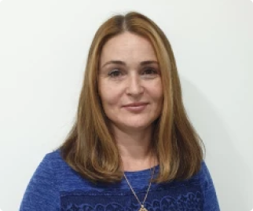

Стоимость приёма
-
Стоимость посещения детского психолога ( в рамках акции «ЗНАКОМСТВО СО СПЕЦИАЛИСТОМ»)
1000 рублей
Врачи направления

Шевчик Любовь Сергеевна
Образование: Челябинский Государственный Университет по специальности «Специальная психология»,
специализация «Детская клиническая психология». Профессиональная переподготовка по программе
«Медицинская психология, неврачебная психотерапия». Курсы: Институт Психологиии и педагогики г.
Челябинск семинар-практикум по теме: «Экзистенциальный анализ сноведений». Московский Институт
психотерапии и психологии «Песочная терапия в работе с детьми и взрослыми». Международное общество
Кататимного переживания образов и имагинативных методов в психотерапии и психологии (МОКПО)
Межрегиональная общественная организация содействия развития символдрамы – Кататимно-имагинативная
психотерапия (МОО СРС КИП): Введение в основы символдрамы А1; Символдрама – техники основной ступени А2;
Символдрама – углубленное прорабатывание техники основной ступени В1; Операциональная психодинамическая
диагностика (ОРД) и Символдрама (часть 1); Символдрама – углубленное прорабатывание техники основной
ступени В2; Депрессия с позиции современного психоанализа и психотерапии по методу символдрамы Т4;
Институт Психологиии и педагогики
г. Челябинск теоретико-практический семинар «Метод «Мандала» в арт-терапии: диагностические и
психотерапевтические возможности». Направления: детские страхи, тревожность, гиперактивность, обиды,
чувство вины, трудности в общении со сверстниками и родителями, агрессия, конфликтное поведение,
задержка психо-физического развития и пр.